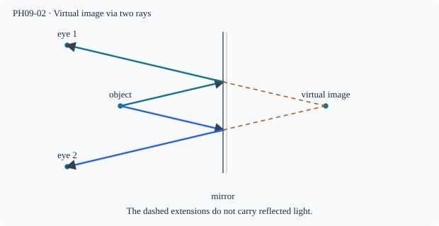

Prerequisite bridge
PH09-01
Before starting, identify the reference frame, directed rays, units and applicable geometric assumptions. Unbound prerequisites remain provisional.
Connected textbook foundation (preserved from PR #5)
3. Plane mirrors make virtual images
When reflected rays from an object enter the eye, the visual system traces them backward along the incoming directions. For a point object in front of an ideal plane mirror, those backward extensions intersect at a corresponding point behind the mirror. No reflected light actually travels through the mirror to that virtual point. A screen placed at the virtual point cannot collect a focused real image there.
The image is as far behind the ideal plane mirror as the object lies in front of it, measured perpendicular to the plane. But that rule applies to the position of the mirror plane and the object; an oblique observer's line of sight does not shorten the physical perpendicular image distance.
Worked anchor: Put a bead 40 cm in front of a fixed plane mirror. The virtual image lies 40 cm behind the mirror. A narrow ray diagram with two reflected lines verifies the location through backward extensions.
Build and check the model
A plane mirror maps a point at signed perpendicular distance a in front to an apparent point a behind. Two distinct rays reflected toward the observer have backward extensions intersecting at that point. Equal angles and congruent triangles give the equality of perpendicular distances. The mirror's finite extent changes which rays can reach an observer, not the image coordinate.
Worked anchor
A mirror occupies x=0; object O=(−3,2) cm. Its image is I=(3,2) cm. An observer at (−6,−1) sees it through the intersection of the line joining observer to I with x=0: y=1 cm. A small mirror must include that point.
Condition and limiting check
A screen behind an ordinary opaque mirror cannot receive the converging reflected rays. A camera in front can photograph the virtual image because its own lens forms a real sensor image.
Misconception repair
Virtual does not mean invisible; distinguish physical rays and dashed extensions.
Reasoning diagram

Self-check before transfer
A point lies 7 cm in front of a plane mirror. A viewer moves sideways while keeping the mirror fixed. Does the image distance from the mirror change?
Check the reasoning
No. The virtual image stays 7 cm behind the plane; different reflected rays reach the viewer if the mirror aperture permits.
The next page contains fresh authored transfer, not an examination reproduction.
Source and figure status
Curriculum pointer D8; candidate scope only. Preserved chapter manuscript. An original subtopic-specific SVG is attached above. Scientific figure and teaching-sufficiency reviews remain HOLD.